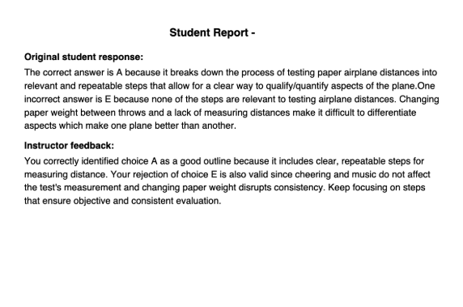
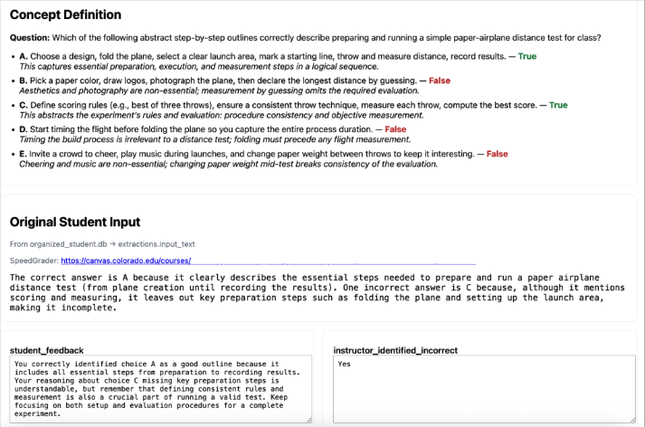
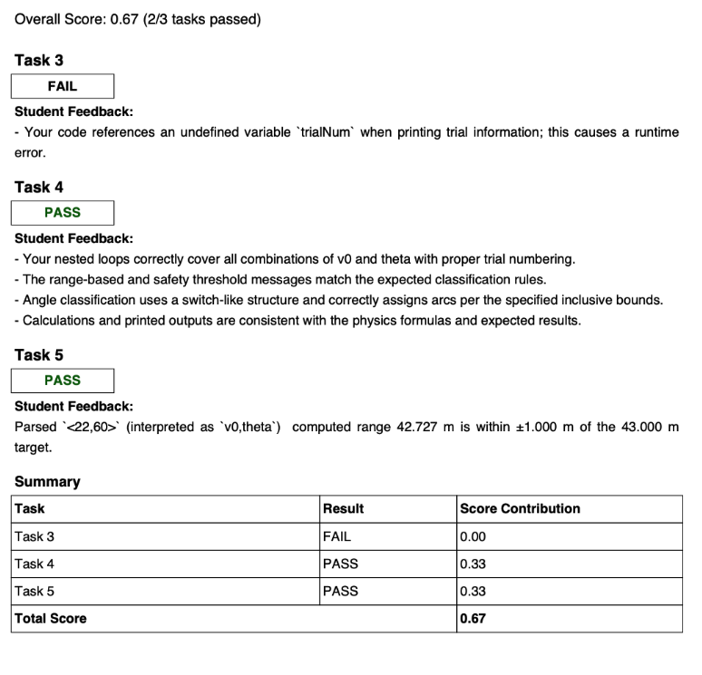
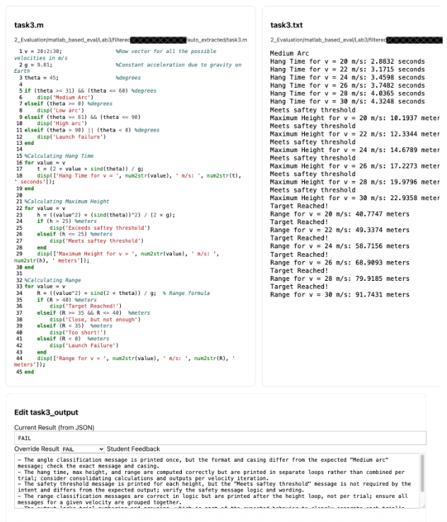

AI-Augmented Personalized Feedback
AI-Augmented Personalized Feedback
Project Summary
The AI-Augmented Personalized Feedback project focuses on using AI systems to support instructors in delivering individualized, formative feedback across a range of student submissions, including concept inventories, lab reports, and open-ended responses. Built on the BUFFALO framework (Bot-Based Understanding via Futuristic Focused AI Learning Opportunities), this project emphasizes understanding, reflection, and conceptual growth rather than automated scoring.
This work directly supports the BOBPE mission by enabling scalable personalization while preserving instructor oversight and pedagogical intent.
Educational Problem Addressed
Providing meaningful, individualized feedback is one of the most impactful instructional practices, yet it is also one of the most difficult to scale. In large courses, instructors are often forced to choose between depth of feedback and timely response, limiting students’ opportunities to reflect and improve.
As a result, feedback is frequently reduced to brief comments or numerical scores that do not adequately support learning or conceptual change.
How AI Is Used
AI is used to:
- Analyze open-ended student responses and submissions
- Generate draft formative feedback aligned with learning objectives
- Identify patterns of understanding and misunderstanding
- Support reflective prompts and follow-up questions
- Assist instructors in synthesizing individual and group-level insights
AI outputs are designed to inform and augment instructor feedback, not replace it.
Instructor Experience
Instructors interact with the system through interfaces that:
- Display student submissions alongside AI-generated feedback
- Allow direct editing and refinement of AI suggestions
- Support consistent application of instructional criteria
- Surface trends across students or groups
This human-in-the-loop workflow ensures that feedback remains accurate, contextualized, and pedagogically aligned.
Student Experience
From the student perspective, feedback is:
- Timely and personalized
- Focused on conceptual understanding rather than correctness alone
- Framed to encourage reflection and self-explanation
- Consistent across assignments and evaluators
Students receive clearer guidance on why their reasoning is effective or flawed, supporting deeper learning.
Example Applications
- Concept quiz reports highlighting individual misconceptions
- Lab report feedback emphasizing interpretation and reasoning
- Open-ended assignments with structured, criterion-based feedback
- Group-level summaries identifying common challenges
Deployment Status
Status: Active classroom use / Research-informed development
The system has been used in instructional contexts and continues to evolve as part of ongoing research into scalable feedback and AI-supported learning.
Artifacts and Links
Concept Report Example

Concept Assessment Grader Interface

Lab Report Feedback Example

Instructor Review Interface

Alignment with BOBPE Mission
This project exemplifies the core BOBPE goal of scalable personalized education by enabling individualized feedback without increasing instructor workload. By focusing on understanding, reflection, and instructor oversight, it demonstrates how AI can enhance feedback practices while remaining grounded in learning science and human judgment.